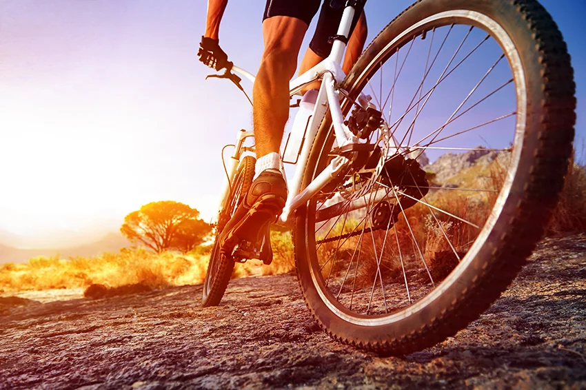
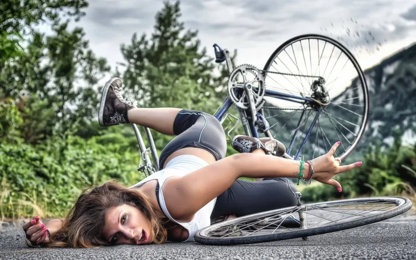

Езда на велосипеде - полезно или нет ?!?

Велосипед, как и собака, это очень хороший друг. Спорт всегда считался хорошим делом для здоровья и самочувствия. Для велолюбителей катание на своем двухколесном коне это самое обычное дело как, например, поесть или пойти прогуляться. Многие люди даже не задумываются о том, сколько пользы может принести данное стредство передвижения. Об этом можно очень долго говорить, начиная от здоровья и заканчивая преодолением пробок на дорогах. За относительно небольшие деньги вы получаете отличный жоповоз, который иногда бывает лучше машины, а самое главное дешевле и экологичнее. Обслуживание так же не требует больших денег, достаточно регулярно мыть и смазывать ваш велосипед. Самое затратное - это может быть только замена какой-то детали, что случается давольно редко.
Чем полезен велосипед
- Хороший сон. Это круто буквально для всех, ведь кому не нравиться хорошо вздремнуть. В идеале это небольшая прогулка с великом один раз утром и вечером. Утром это желательно делать до того как пойти на работу или учебу, это хорошо помогает проснуться, и дает бодрость на весь день. А вечером это лучше делать примерно за час или полтора до сна. Физическая нагрузка помогает лучше уснуть и крепче спать. На самом деле это очень даже расслабляет, ведь не нужно устраивать целую кардио тренеровку, достаточно небольшой прогулки на средней скорости в течение получаса. Как минимум один раз в жизни это нужно попробовать всем.
- Хорошее пищеварение. Езда на велосипеде возбуждает аппетит. Очень круто утром перед завтраком покататся немного на велосипеде, и потом с удовольствием перекусить. Благодаря нагрузкам улучшается переваривание пищи. Появление аппетита – признак активного обмена веществ.
- Улучшение выносливости. Благодаря регулярным поездкам на велосипеде, вы повышаете общую выносливость организма, чувствуете себя сильнее, бодрее, активнее и крепче, легче переносите нагрузки, не так сильно или быстро устаете на протяжение дня, стабилизируется и ваш эмоциональный фон, повышается иммунитет.
- Снижение веса. Ни для кого не секрет, что с помощью велосипеда можно неплохо сбросить вес. Человек сжигает большое количество калорий крутя педали. Люди, которые ездят быстро, но на короткие дистанции, сжигают в несколько раз больше жира, чем те, которые ездят на длительные дистанции, но более медленно. Это очень эффективный метод.
- Повышение мышечного тонуса. Поездки на велосипеде очень хорошо тренируют мышцы ног, груди, спины, рук. Благодаря этому улучшается их форма и одновременно повышается выносливость мышц. Если вам нравиться велосипед, вы получаете двойной эффект: занимаетесь любимым делом и при этом получаете столько преимуществ.
- Это лишь несколько причин, почему стоит приобрести велосипед, но их гораздо больше: снижение стресса, укрепление нервной системы, улучшение умственных способностей, укрепление сердечно-сосудистой системы, обогащение клеток кислородом, улучшение кровообращения, предупреждение варикоза, улучшение работы легких, улучшение зрения, укрепление иммунитета, развитие вестибулярного аппарата, экономия времени на дорогу, отсутствие проблем с парковкой, экономия денег, времяпровождение с семьей, знакомство с новыми друзьями, и так далее.
Вред велосипеда
Как и любое другое занятие, все должно быть в меру. Самые обычные прогулки с велосипедом, как мы выяснили ранее, очень полезны для организма, но не нужно перебарщивать. Не стоит преодолевать расстояния в сотни километров в короткие промежутки времени. Такого рода действий могут привести к плохим последствиям. Нужно прислушиваться к своему организму. Если что-то болит, например нога, то возможно нужно отложить велосипед на пару дней. Если вы сильно измотаны после работы, и хотите покататься просто потому что вы прочитали в интернете что это полезно, то вам не стоит воспринимать все настолько буквально. Да, это полезно, даже очень полезно, но не нужно насиловать организм, это пользы не принесет.
